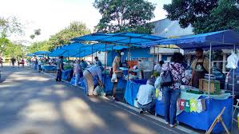

Comércio em Limeira
Limeira é reconhecida pelo seu comércio diversificado, com destaque para o setor de joias, bijuterias, agronegócio e serviços. A cidade conta com shoppings, centros comerciais e feiras tradicionais que movimentam a economia local.
- Joias e Bijuterias
- Agronegócio
- Comércio de Rua
- Feiras Livres

Shopping Center Limeira
O principal centro de compras da cidade, com lojas, praça de alimentação e lazer.

Feira de Limeira
Feira tradicional com produtos frescos, artesanato e comidas típicas.
Galeria Central
Espaço com lojas variadas no coração do centro comercial. Famoso Mercadão na cideda